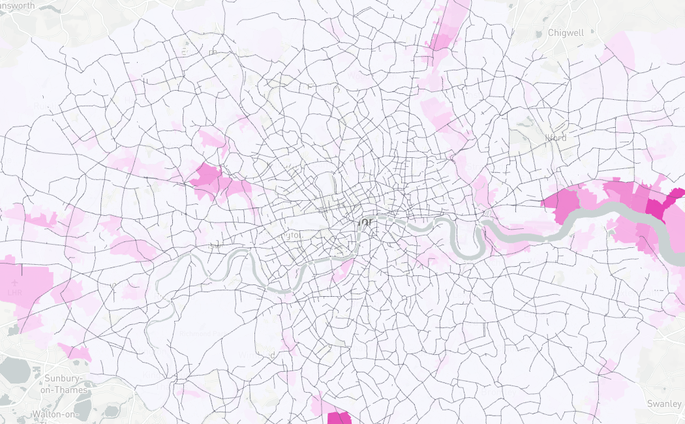

London Manufacturing Profiler
Nicolas Palominos, Sam Griffiths, Francesca Froy, Jess Ferm.
The Bartlett Faculty of the Built Environment, University College London.
January, 2020

1 Introduction
This profiler brings together a set of urban manufacturing and urban morphology measures in the area of Greater London. Manufacturing is quantified according to 3 indicators: ‘Manufacturing Businesses’ (London Datastore), ‘Manufacturing Jobs’ (BRES) and ‘Industrial Land Designations’ (GLA). For a detailed review of these categories including the data sources see here. A cartographic summary can be consulted here.
To investigate the relationships between these measures with the spatial accesibility and urban structure of Greater London, Space Syntax measures of ‘Choice’(through-routes) and ‘Integration’(to-routes) at 2km and 10km distances are used to create 12 map overlays.
The selection of street segments with highest ‘Choice’ and ‘Integration’ (top 20%) shows a clearer view of the key street segments in each measure. A summary for these measures is shown below.
| Summary of highest 20% values of Choice and Integration (n=23409) | ||||||
| Min. | 1st Qu. | Median | Mean | 3rd Qu. | Max. | |
|---|---|---|---|---|---|---|
| Choice 2km | 14138.2 | 18558.2 | 25726.0 | 34227.0 | 40110.8 | 259147.2 |
| Choice 10km | 859633.8 | 1565274.9 | 2940044.2 | 4995085.5 | 6071841.5 | 45672164.0 |
| Integration 2km | 217.7 | 242.4 | 279.6 | 304.1 | 343.3 | 695.6 |
| Integration 10km | 2165.3 | 2352.3 | 2558.6 | 2607.5 | 2812.8 | 3672.4 |
The differences betwween these measures is not only in their metrics but also in their spatial pattern
2 Summary matrix
The following matrix allows a visual exploratory data analysis of the measures previously presented. Each map combines a ‘Manufacturing’ with an ‘Accesibility’ data layer. The map images link to interactive maps with pan, zoom and infowindow functionalites for a deeper graphical examination.
| dataset | London Businesses Directory (points) | Business Register and Employment Survey (LSOA) | Industrial Land Designations (LSOA) |
|---|---|---|---|
| map notes |
n=22,320 Tooltip: Company Name |
Darker yellow is both conditions: > 6% of Manufacturing jobs > 40 jobs Tooltip: Number of jobs |
Includes SIL, LSIS and NAL Tooltip: Area of industrial land (sqm) |
| Choice 2km | |||
| Choice 10km |  | ||
| Integration 2km | |||
| Integration 10km |